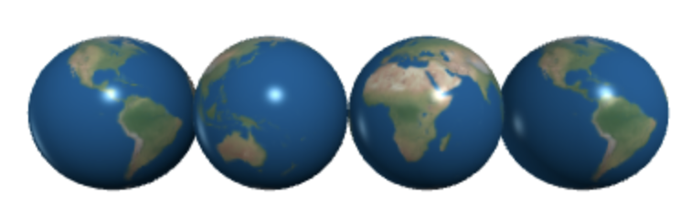

CMPSC 100: Computational Expression, Spring 2025
Below is the beginning of the sphere() class as it’s written in the VPython library source code. This code block includes the class definition and constructor method:
class sphere(standardAttributes):
def __init__(self, **args):
args['_default_size'] = vector(2,2,2)
args['_objName'] = "sphere"
super(sphere, self).setup(args)
self._sizing = False# no axis/size connection[!NOTE] Some syntax above are advanced and we will learn a slightly simpler verison in the coming lesson.
In today’s Discord thread, see if you can guess the answers to any of the following questions:
Classes in Python allow you to define your own data types and organize related functionality into methods. Methods are functions defined within classes that operate on instances of the class. They provide a powerful way to structure and reuse code.
Example: Imagine you’re building a game. You can create a Player class with methods like move() and attack(). Each player object can have its own properties like health and position, managed by these methods.
Classes offer several advantages over regular functions:
Encapsulation: Classes encapsulate data and behavior into a single unit, promoting clean and organized code.
Code Reusability: With classes, you can reuse code by creating multiple instances with the same structure and behavior.
Inheritance: Classes support inheritance, allowing you to create new classes based on existing ones, saving time and effort.
Modularity: Classes facilitate modular programming, making it easier to maintain and extend your codebase.
This code defines a class named Car. It has a constructor method init() that initializes the make, model, and year attributes of the car object. The display_info() method prints information about the car’s make, model, and year when called.
self Parameter in Python Classes and MethodsIn Python classes and methods, self refers to the instance of the class itself. It is the first parameter of instance methods and is used to access and manipulate the attributes and methods of the object.
Key Points: - self is not a reserved keyword, but it is a convention to use it as the first parameter in instance methods. - It allows methods to access and modify the attributes of the instance to which they belong. - When calling methods of an instance, Python automatically passes the instance itself as the first argument (i.e., self).
Example:
The constructor method in Python classes, denoted by __init__, is called automatically when an instance of the class is created. It is used to initialize the attributes of the instance.
Key Points: - The constructor method is used to set up the initial state of the object. - It is defined using the def __init__(self, ...) syntax within the class definition. - The constructor can accept arguments to initialize instance attributes. - It is called implicitly when an instance of the class is created using the class name followed by parentheses.
Example:
In Python, instances are individual objects created from a class. Each instance has its own set of attributes, which are variables associated with the instance. Attributes store data specific to each instance.
Key Points: - Instances are created by calling the class as if it were a function. - Each instance has its own namespace, allowing it to have unique attributes. - Attributes are accessed using dot notation (instance.attribute). - Attributes can be assigned values during object creation (in the constructor) or dynamically during the object’s lifetime.
Example:
In addition to the constructor method (__init__), Python classes can have other methods to perform various tasks or operations on class instances.
Key Points: - Methods are functions defined within a class. - They operate on the attributes of class instances and can perform specific actions or computations. - Methods are defined using the def keyword within the class definition. - They typically accept self as the first parameter to reference the instance on which the method is called.
Example:
We have already been using classes and methods in VPython. Every shape in VPython is its own class.
Because the shape constructor methods operate very similar to a regular function, we have been discussing shapes that way for simplicity. However, there is one shape method we have used several times. Can you remember what it is?
This example takes our stick figure code from previous classes and puts it in a class. What new capabilties can we give the stick figure in this format?